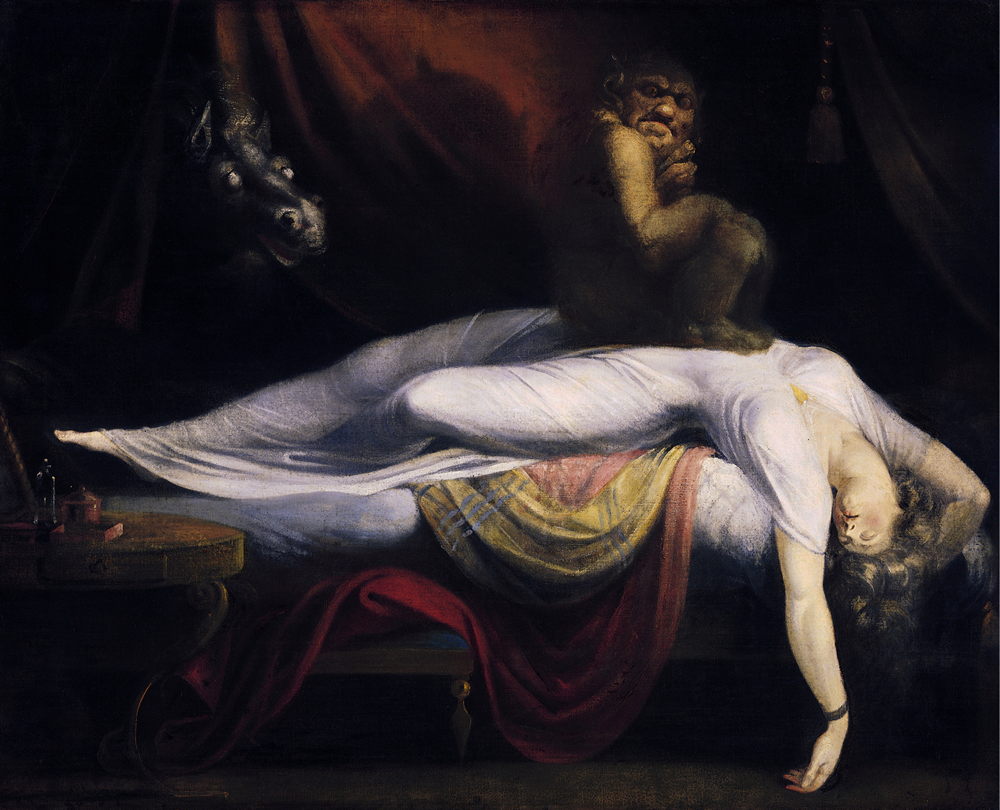
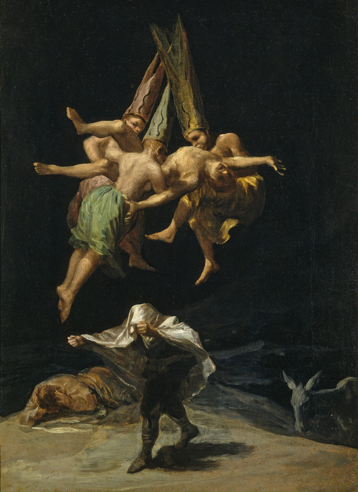
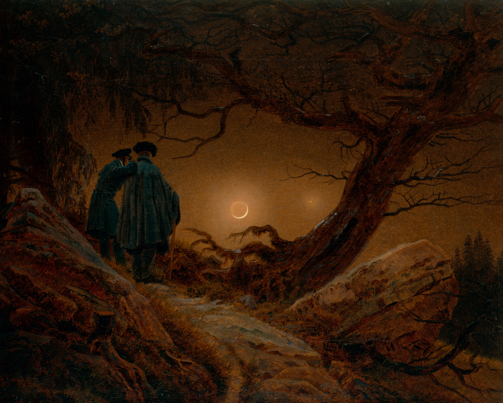
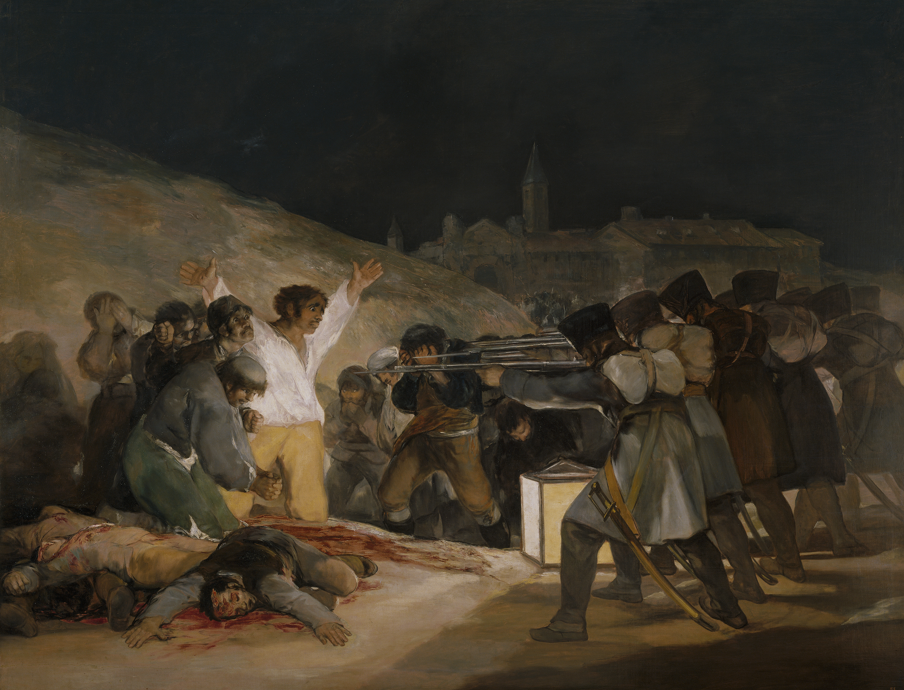
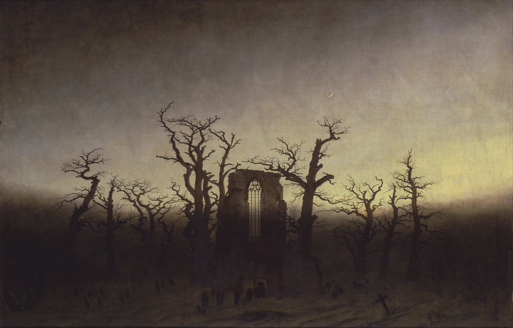

An exploration of the shadowy, irrational, and sublime dimensions of human experience — in direct opposition to the optimism of Enlightenment thinking.
Dark Romanticism emerged in the early nineteenth century as a counter-movement to transcendentalist faith in human goodness. Where other Romantics celebrated nature's beauty, the Dark Romantics turned their gaze inward — into obsession, guilt, and the terrifying sublime. Their works endure not despite their darkness, but because of it. To confront a Friedrich landscape or a Fuseli nightmare is to recognise something irreducibly true about the human condition.
Nature as a force of overwhelming terror and awe — vastness beyond human comprehension or the capacity to endure.
The rejection of simple virtue. Heroes are flawed; evil is seductive; redemption is uncertain and always costly.
Dreams, visions, and psychological collapse treated as superior modes of knowing — darker windows into truth.
The figures who defined the movement — painters, poets, and novelists who dared to illuminate what others feared to name.
The foremost landscape painter of the Romantic period. Friedrich's canvases place solitary figures before vast, indifferent nature — his Rückenfigur technique immersing the viewer in existential contemplation before horizons that offer no comfort.
Sublime LandscapesGoya's late Black Paintings are among the most harrowing works in Western art history — a private vision of madness, war, and devouring myth painted directly onto the walls of his own home, discovered only after his death.
Horror & WarFuseli's The Nightmare (1781) is the emblematic image of Dark Romanticism — a demon crouching upon a sleeping woman as a pale horse looms through curtains, rendering the unconscious as a site of violation and dread.
Dreams & DemonsPoe's tales and poems form the literary core of the movement. His exploration of guilt, obsession, and psychological collapse — in The Tell-Tale Heart, The Raven, and The Fall of the House of Usher — defined Gothic fiction for all generations that followed.
Gothic FictionHover to reveal each work from the canon. These atmospheric masterpieces now pull directly from the public domain archives.






Dark Romanticism did not arise from a vacuum. It emerged in the early decades of the nineteenth century as the shadow-self of mainstream Romanticism — sharing its rejection of Enlightenment rationalism, but diverging sharply in its conclusions about human nature and the natural world.
Where figures like Wordsworth saw nature as a source of moral instruction and spiritual renewal, the Dark Romantics — Friedrich, Goya, Fuseli, and their literary counterparts — experienced the same sublime landscapes as something altogether more terrifying: vast, indifferent, and alien to the human soul.
"The boundaries of my domain are the boundaries of the universe."
— Attributed to Friedrich's artistic philosophyThe movement's origins are inseparable from the political upheavals of the era: the Napoleonic Wars, the failure of revolutionary idealism, and the dawning realisation that reason alone could not secure human dignity.
The Enlightenment project rested on confidence in reason as the engine of human progress. Dark Romanticism constitutes a sustained artistic rebuttal of this faith — turning instead toward dreams, visions, psychological obsession, and the parts of experience that reason could neither explain nor contain.
"The sleep of reason produces monsters."
— Francisco Goya, Los Caprichos No. 43, 1799Goya's meaning is characteristically ambiguous: it is unclear whether the monsters arise because reason sleeps, or whether reason itself is the monster revealed in sleep. This irresolution is the movement's truest philosophical signature.
Edmund Burke's 1757 treatise distinguished the beautiful — harmonious, finite, reassuring — from the sublime: vast, obscure, powerful, and verging on terror. For the Dark Romantics, this terror was not merely aesthetic but existential.
Friedrich's figures stand at cliff edges, their backs turned to the viewer, gazing into distances that dwarf and potentially annihilate the self. The sublimity is not uplifting. It is vertiginous. It is a confrontation with the possibility that the universe is not arranged for human comfort.
The influence of Dark Romanticism on subsequent cultural history is immense. The movement directly prefigures Symbolism and Expressionism in the visual arts; in literature, it plants the seeds of Gothic fiction, horror, and the psychological novel.
Contemporary artists from Anselm Kiefer to Guillermo del Toro have acknowledged the movement's enduring power. In an age of accelerating technological optimism, Dark Romanticism's insistence on the irreducible darkness at the heart of human experience feels, if anything, more urgently necessary than ever.